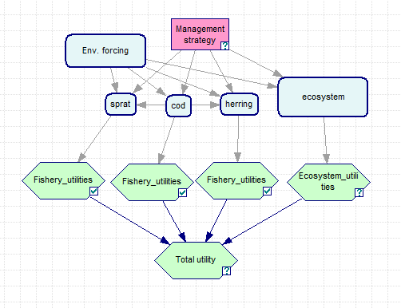
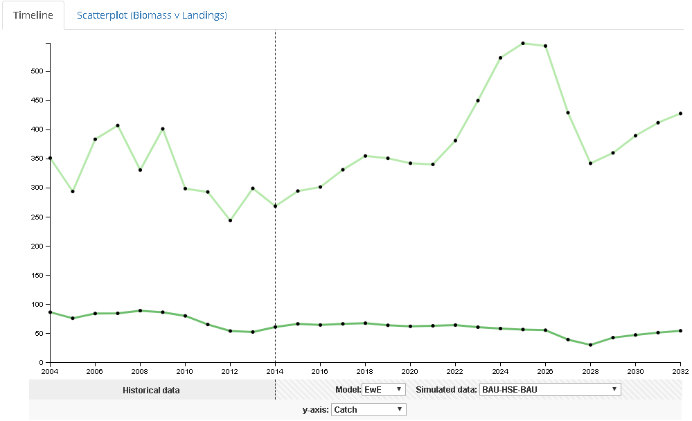
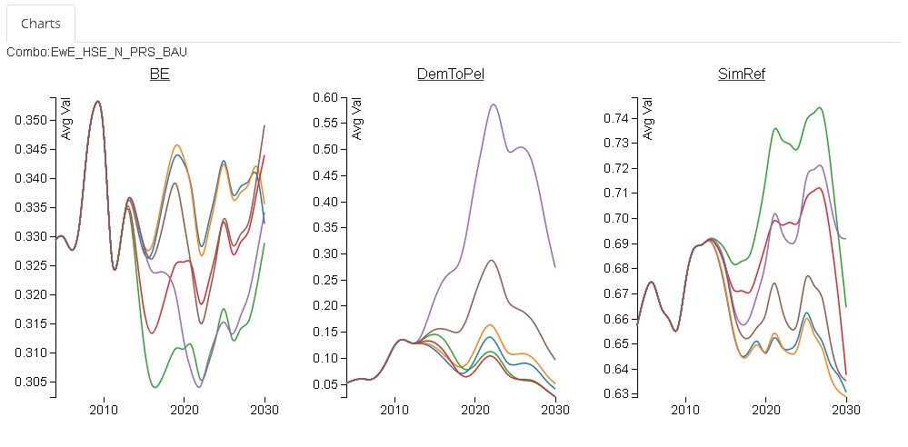

Decision Support Framework
Decision Support Framework

The MareFrame Decision Support Framework is a pragmatic planning process for moving towards an Ecosystem Approach to Fisheries Management. Click on the map of Europe to the left to see all case studies or explore the current case study below.
Case Study: Baltic Sea
Objective: Management of cod, herring, and sprat fisheries considers trophic interaction among the stocks in the Central Baltic, as well as the major environmental drivers influencing the dynamics of the harvested populations. The social and economic benefits that can be derived from these fisheries are explicitly acknowledged in the management process.
Management Problem
The cod stock has exhibited a progressive decline since the mid-1980s reflected in overall catches, as well. Cod is the main predator on herring and sprat but, on the other hand, herring and, in particular, sprat prey on cod eggs. The trophic interactions among cod, herring and sprat may have a profound influence on the dynamics of these stocks in the Baltic, but there is considerable uncertainty about strength of those effects. Also size distribution, growth, and condition factor have fluctuated. Changes in these biological attributes have implications for the fishery and on fish processing and marketing.
The major management considerations are:
- Trophic interaction among cod, herring and sprat stocks causing trade-offs among the fishing fleets
- Large-scale hydrographic fluctuations and the decrease of the reproductive volume associated to increased hypoxia which impair cod recruitment
- Cod overfishing during the past decades
- Reduced growth rate of cod (hypotheses: (i) environmentally driven and/or (ii) fisheries induced and/or (iii) induced by trophic interaction)
- Eutrophication influencing oxygen concentration and quality of the coastal spawning habitats
Management Setting
The Baltic Sea major fisheries are governed by the EU as guided by CFP, MSFD, Habitats Directive, Marine Spatial Planning, and Baltic Sea Action Plan. The EU Commission and fisheries directors constitute the BALTFISH High Level group putting forward fisheries policy initiatives. Regionalization and participatory processes are carried out in the BALTFISH Forum where Advisory Committee (BSAC), representing all relevant stakeholders and interest, and ICES, HELCOM, Member States, and the EU Commission interact in a structured manner.
Fishery in the Baltic is regulated mainly by TACs. ICES is the main external advisory body on stock management while STECF provides internal advice and evaluations. For stocks for which analytical assessment exists ICES advises TACs using the following hierarchy of options:
- TAC resulting from management plan, if such plan exists and has been evaluated by ICES as precautionary
- management plans are based on single-species considerations/targets and have been developed using single-species analytical approaches
- TAC resulting from MSY approach, i.e. TAC determined by Fmsy
- TAC resulting from precautionary approach, i.e. TAC determined by Fpa or TAC under which SSB is expected to be above Bpa, if fishing at Fpa leads to lower biomass than Bpa.
- Reduced growth rate of cod (hypotheses: (i) environmentally driven and/or (ii) fisheries induced and/or (iii) induced by trophic interaction)
- Eutrophication influencing oxygen concentration and quality of the coastal spawning habitats
Spawning aggregations of cod are protected with seasonal (May-Oct) closed areas in the Bornholm basin, Gdansk basin and Gotland basin.
There are bilateral agreements between the EU and Russia about Baltic fisheries defining the allocation of the TAC between the EU and Russia, before the EU part could be split among EU countries using the relative stability principle. This rule maintains the TAC shares fixed among the countries, although they are allowed to exchange the national quotas with bilateral agreements.
EU has agreed on a multiannual plan for cod in the Baltic Sea in 2007 but the multispecies management plan is yet to be developed. However, multispecies simulations showing effect of cod biomass on clupeids mortality have been conducted.
Main objectives and criteria
A management proposal for the case study will be evaluated in relation to a set of objectives and criteria. Some criteria are derived from the current ICES approach and some refer to the EU policies: the CFP and the MSFD. For instance, the CFP requires that the spawning stock biomass (SSB) of any commercial fish stock should be at or above the level consistent with a Maximum Sustainable Yield (MSY) no later than the year 2020. The development of regional, multi-stock long-term management plans are envisaged as an important element of the CFP.
| Objectives for the management plan proposal | Candidate operational objectives and indicators |
|---|---|
| Rebuild the eastern Baltic cod stock |
|
| Maintain herring and sprat biomass at Bmsy |
|
| Ensure economically viable fleets |
|
| Maintain foodweb integrity |
|
Bayesian Belief Network
BBN Stakeholder A
BBN Stakeholder B
BBN Stakeholder C
MCA Stakeholder A
MCA Stakeholder B
MCA Stakeholder C
Scenario Model output

Management Scenarios
Business-as-usual: TACs based on single species fishing mortality rate targets for cod, sprat and herring.
What would be the future status of fisheries, and ecosystem in general, if management was to proceed as before the 2014 CFP reform? The purpose of this scenario is to establish a baseline for comparing the alternative management approaches represented by the other listed scenarios.
Economic optimum within set constraints: Maximum Economic Yield for cod
The purpose of this scenario is evaluate the benefits and trade-offs if management was optimized to receive the maximum resource rent of the cod fishery. Trade-offs would be necessary due to trophic interactions among cod, sprat and herring.
Multi-species Harvest Control Rule (HCR)
What would be the future status of fisheries if management approach were based on the multispecies Fmsy strategy? There are trade-offs between stock size, yield, and risks of stock decline to biological limit points among sprat, herring and cod stocks. In addition, biomass considerations could be incorporated into the HCR.
Conservation scenario: Optimal fisheries while reducing negative impact on sensitive ecosystem elements
The purpose of this scenario is to evaluate the future status of fisheries and ecosystem by addressing management measures capable of reducing environmental impact without needless compromises in the fisheries sector.
Scenario Model output - Charts

Scenario Model output - Box Plots